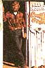
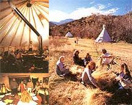
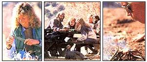

MOTHER's readers have always shown a strong interest in wilderness skills. For a long while we addressed that interest with a survival-skills series written by Tom Brown,The Tracker. Recent surveys show that readers want even more. So, beginning here and running through several future issues, we'll take you on a tour of five leading wilderness skills schools. Our writers are attending these schools now, documenting their experiences photographically and preparing reports in order to provide a sound basis on which readers interested in gaining supervised, first-hand backcountry experience can select a school appropriate to their needs.
WILDERNESS SCHOOLS, PART I:
From Globe, Arizona, we loaf along U.S. highways 60 and 88 some 25 miles to the Spring Creek Store. Two miles on, according to our hand-drawn map, and we'll swing west onto an unpaved track for the final eight miles, passing through four stock gates, lugging up then braking down two abrupt hills and wet-wheeling it across several meanders of Campaign Creek to Reevis Mountain School of Self-Reliance. Don't attempt the unpaved portion of this journey in a vehicle with low clearance or a tired engine, we've been advised. In fact, incoming students are encouraged to leave their vehicles at the Spring Creek Store and ride in the last few rugged miles courtesy the school. Pickup time is 8:30 tonight.
Sound advice. Only the foolhardy would ignore it. However, after a quick raid on the Spring Creek Store to stock up on snacks and soft drinks (no alcohol allowed at the school, and the one meal a day that comes with the price of tuition is hard-core vegetarian), photographer Branson Reynolds and I squeeze back into my trusty old Beetle and I steer off into the wild and woolly Sonoran high desert, God's own cactus garden.
"Wild-looking country,"
Branson says. Indeed. A hoodoo landscape haunted by ghosts: A blue-suited cavalry pursuing near naked Apaches up these dry washes into the jagged Superstitions ("Campaign Creek," this is); grizzled prospectors chasing the mythical Lost Dutchman's gold. And of the school we've heard some rather spooky tales as well: Of an apiary abandoned after persistent raids by a bear. Of cots with their legs set in cans of motor oil to discourage lonely scorpions from joining the occupants of sleeping bags. Of squealing, ivory-tusked javelinas chasing a snarling cougar smack through the middle of the school grounds on a fullmoon night.
Yes, this is wild country. The Superstition Mountains. High-desert wilderness. An Old West of the mind. A Wild West for real. Up Owl Hill, down through Skydive Gulch. We splash across Campaign Creek again-the clear water bubbling up over the running boards of my low-slung Bug-then come to a cool grove of white-barked sycamores. We stop and pry ourselves out of the Beetle for a stretch. Early December, and the grass beneath these big bare trees is green and lush, watered by a rare snowfall that looks to have beat us here by just a couple of days; patches of white still hang on wherever there is shade.
Onward.
At the end of the trail we leave the car to tick oft' its heat beneath an ancient cottonwood. As we walk up the shady lane leading to the school, we're greeted by a tall mesomorph who materializes silently from the woods. Looking to be in his early 40s, with longish hair and a flowing salt-and-pepper beard, this has to be Peter "Bigfoot" Busnack, the honcho of Reevis Mountain. Glancing down at his hand-cobbled leather boots, I see that he comes by his moniker honestly. Bigfoot leads us on up the path, past tipis and yurpis (Reevis-designed amalgams of yurts and tipis) pitched back along the creek and nicely spaced for privacy. Where the narrow neck of the valley opens into the head of a Vshaped meadow, we come to a nine teenth-century board-and-batten ranch house that serves now as school headquarters and community dining hall.
The community members-singles, couples, families with children-live in the same primitive cloth shelters as those rented to students not wishing to camp in their own tents. No distracting jingle of telephones here, no power lines scarring the turquoise sky, no flush toilets. But appropriate technology, both modern and ancient, is in evidence everywhere: panels of photovoltaic cells, Oriental-style squat privies and native stone greenhouse and shower buildings, the latter offering gravity-fed spring water warmed by passive solar panels during summer and a wood-fired drum boiler in winter. After dinner with the residents, we hit our cots early-it has been a 500-mile day. We rouse only briefly when the school's vintage VW Transporter comes sputtering in with the rest of the students.
At seven in the morning, we're awakened by a clamor like someone beating on a big iron pipe with a five-pound sledge; we discover a few minutes later that it was exactly that-the RMS assembly bell. Outside, the sandy desert soil sparkles with frost. We breakfast with the staff and students-unsweetened porridge, unsweetened whole grain muffins (damn that honey-stealing bear) and mixed garden vegetables (fresh in December!), all washed down with juniper and mesquite teas (if you want coffee, bring your own). At eight o'clock, Peter assembles the group, gives a brief introductory talk and leads off up the trail to the sunny western ridge.
The purposes of this hike are many: to ascertain the lay of the land, to enjoy the views, to learn Bigfoot's "macro view" technique of lost-proofing, to become familiar with some of the more common and useful edible and medicinal wild plants of the Sonoran, to learn the tricks of finding water in arid country. And more. As we top the ridge Branson and I spot the tumble-down stone walls of a pre-Columbian Indian village. Hohokam, most likely. Over yonder, side by side, sit two metates, large flat stones used by Southwestern Indians for grinding corn and mast. Flint shards lie at our feet. Peter points out the ruins, telling us that similar village sites are scattered along these ridges by the dozens, then cautioning that we're on public land now and that to remove or disturb any of these artifacts would be not only immoral but felonious. We move on.
About midmorning we halt in a little clearing and crowd around Peter to watch him make fire by rubbing two sticks together. ("Sure," some skeptic whispers. "Could be," Branson replies.) All morning Peter has been gathering the natural materials he'll need to construct a primitive fire-making device called a bow drill-your basic Stone Age Zippo. The parts include two 16-inch bonedry lengths of the woody flower stalk of the yuccalike sotol plant (for drill shaft and fireboard-the two sticks that get rubbed together), a two-foot length of live juniper limb about an inch in diameter (for a bow to spin the shaft) and a short section of juniper limb split in half (the "bearing block," for applying downward pressure on the drill shaft to increase the friction).
But one critical ingredient for the bow drill Bigfoot does not collect from nature: After explaining that in a survival situation we can use a boot lace, a leather thong or some natural cordage for a bowstring, he produces a length of cotton sash cord from a hip pocket ("Cheater," some critic hisses) and ties it from end to end of the juniper bow. While our instructor is fashioning his firemaking device, a few students busy themselves shredding juniper bark for tinder while others gather dry brush and twigs for kindling. With the drill ready and a good supply of burnables arranged nearby, Bigfoot's moment of truth has arrived. He places a wad of tinder on the ground, positions the assembled friction apparatus atop the tinder and anchors it with one big foot. Now, slowly, his right hand working the bow while his left presses down on the bearing plate, he com mences sawing-back and forth, back and forth-causing the drill shaft to spin. Gradually he increases both speed and pressure until a wisp of white smoke appears where drill meets fireboard. Within 13 seconds-I time him-our instructor is engulfed in a cloud of smoke.
Where there's smoke there's fire, so Peter carefully lifts the drill shaft from the fireboard and leans down to blow the tiny ember of smoldering wood dust to life. Now he uses a twig to flick the glowing coal down into the tinder bundle. Carefully folding the tinder around the ember, Peter raises the bundle and blows gently until the shredded bark bursts into flame. Finally, moving with the speed of a man holding fire in his hands, he tucks the flaming tinder into the center of the waiting tipi of kindling and-like ancient magic-here there be fire. We move on, learning as we go, up along the open ridge and past more ruined stone walls, down into brush-choked ravines where the spicy smell of seep willow leads us by our noses to water. We drink. By early afternoon (no lunch breaks here; no time) we are back at the school where we'll spend the remainder of the day-each and every last student-in our own personal quests for fire.
By some incredible stroke of luck, I'm the first to complete the construction of a workable bow drill and to make flame. Others, less accustomed to working with knife and wood, will take much longer, but all will eventually succeed, even the two Reevis children tagging along with our group today. Every so often, Peter calls a break in our pyric endeavors to demonstrate other handy bits of backcountry lore: preparing and making fire with flint and steel, building a hot earth survival bed and suchlike. This morning's hike will prove to be the only field outing of the course and the fire making exercise to be the high point of the weekend.
After dinner at the ranch house, we are entertained with a photovoltaic-powered slide show and Bigfoot's narration of his incredi ble 85-mile solo trek across the hottest part of Arizona's lower Sonoran Desert during the hottest two weeks of the hot hot summer of '76. He carried a camera and basic survival equipment such as knife, compass and water containers, but no food and no water, trusting his life entirely to his desert savvy.
Midday temperatures pulsed up to 135°F. Bigfoot fell sick with hepatitis (from bad water), but cured himself with wild herbs. He ate wild greens, bugs, frogs, a rattlesnake. He got water from his food, from the occasional seep, trickle, spring or stream and, at the worst of times, from barrel cactus. He survived. The desert odyssey of Peter Bigfoot remains unmatched (few would try) and, as word got around, the feat established Busnack as a Sonoran legend in his own time, eventually leading him to found Reevis Mountain School of Self-Reliance. We spend the two remaining days of our class on campus-frosty mornings huddled around a woodstove in the big yurpi that serves as the community's schoolhouse, afternoons sprawled out under the warm winter sun-discussing and practicing a variety of outdoor skills.
These skills include selecting the best style and size knife for our needs and keeping it sharp; choosing outdoor clothing appropriate to task, terrain and weather; sleeping warm sans tent and sleeping bag; choosing wilderness campsites; constructing emergency shelter (the students build a grass thatched hut) . . . and, though I dodge it, there's a class on meditation.
The afternoon of the third day, leaving a bit early in order to keep an appointment in Tucson that evening, Branson and I say our good-bys, crank up the Bug and chug away from Reevis Mountain and the Superstitions, back down through Skydive Gulch, up and over Owl Hill, out across the desert flats and finally back onto the blacktop trail to everywhere.
The School: An Overview
The Reevis Mountain School of Self-Reliance was incorporated in 1979 as a nonprofit educational institution dedicated to researching, perfecting and teaching natural living, healing and wilderness survival skills. To date, the school has graduated some 1,300 students.
In the opening paragraph of the brochure RMS sends out to prospective students, Peter Busnack says, "To our knowledge, there is no other school anywhere like ours." I agree. What makes RMS unique-not necessarily better or worse but undeniably unique-is that it's neither adventure- nor challenge-oriented, as are virtually all other such schools. Most RMS courses are self-reliance-oriented. Many of these deal with wilderness skills; the value of others is open to individual interpretation. To wit (from the 1987 Spring-Summer class schedule)
:\Primitive Life Skills (making baskets and stone tools; 2 days)
• Land Navigation (2 days)
• Yurpi Building (3 days)
• Stone Masonry (6 days)
• Herb Study (several variations; 2 and 3 days)
• Natural Remedies (3 days)
• Survival Into the New Age (disaster preparedness; 2days)
• Tanning Skins (3 days)
• Survival Skills Trek (6 days)
• Vision Quest (3 days)
• T'ai Chi Chuan (3 days)
• Meditation Retreat (3 days)
So what does this metaphysical slant portend for those students-such as Branson and myself- who come to RMS to learn wilderness skills, having no expectation of being exposed to New Age philosophies? Well, I reckon it depends. If you're a New Ager, you've stumbled upon a mecca. But me, I'm something of a loner, more inclined to cynicism than mysticism, and-so my wife tells me-possessing strong misanthropic leanings. Consequently, the RMS ritual of forming a circle, joining hands to sing and chant "om" for 15 minutes prior to dinner each evening struck me as inappropriate to the occasion. A wilderness skills school should, in this observer's opinion, be just that and nothing more, with the staff's spiritual leanings and personal Weltanschauungs kept personal.
On the other hand, Branson is a wonderfully easygoing fellow, more people oriented, more open to new ideas. And while he didn't pretend to enjoy the requirement of singing for his veggies every night, neither did it really bother him. "Just a part of the experience," he'd say. And while I ditched the meditation class in favor of a shower, Branson sat through it in graceful composure.
Of our fellow students, most were urban folk who, with a couple of exceptions, seemed to arrive knowing what to expect, and thus enjoyed the entire program.
One solution for those who may wish to study desert skills at RMS but who lack enthusiasm for group sings, meditation, vegetarian dining and after-dinner conversation centering on reincarnation, OBE's and spiritual channels is to bring your own food and keep to yourself in the evenings. There's a beautiful little meadow down along the creek, and no one will try to make you feel like a misfit (they didn't me).
Evaluation
So, do I recommend RMS or no?
"Sure," I'm inclined to say. Sure. But it's not that simple, so I'll equivocate: It depends on your prior outdoor experience and on your expectations and disposition.
Subjectively:
As a lifelong outdoors man and survivor of Marine Corps, Army and Air Force survival schools-not to mention the Boy Scouts-I can't honestly say that I learned a whole lot new at RMS. Which isn't to say I didn't learn: Since the RMS weekend, I feel a bit more at home in serious cactus boonies (by residence, experience and preference, I'm a mountain man). Then there's the fire-making drill: Peter Bigfoot gave to me a skill I had pursued unsuccessfully for years.
Objectively: The Wilderness Survival Skills course description makes no claim to offer a rugged wilderness experience or to provide advanced survival training. It is-plain, simple and right out front-an entry-level course. For our classmates-most of whom came to Reevis with limited or no outdoors experience-the long weekend obviously was both educational and fun. For some, it was even a challenge.
And for one lady from New York City who'd never before in her life camped out, it was a grand adventure. She spent all three cold nights sleeping on a warmed-earth survival bed with no tent between her and the stars, bears, scorpions, cougars, javelinas and hoodoos. (Meanwhile, he-men Branson and I huddled round a sheepherder's stove in our cot-equipped tipi.) For that green but spunky Big Apple lady who played her time in the Wild West for all it was worth, Reevis proved to be the outdoor experience of a lifetime.
So, you see, it really does depend.
The three-day Wilderness Survival Skills course Branson and I joined is being replaced next time around (it will return) by a six-day Survival Skills Trek. The same skills will be covered, but this time within the context of a 45-mile wild-country hike and several nights of primitive camping. That, I suspect, will more closely approach what I had hoped to experience. Financially, RMS is a bargain. Tuition varies by course, of course, with the three day, three night Wilderness Survival Skills class Branson and I took going for a paltry $90-including instruction, course materials, a place to pitch a tent, shower facilities, a take-home copy of Bigfoot's Survival Skills Manual (68 pages, rough-hewn but packed with information) and two all-you-can-eat vegetarian dinners. An additional $5 a night (double occupancy) will rent you a cot in a tipi or yurpi (bring your own bag).
The only enrollment requirements at RMS are a willingness to follow the rules and cooperate, and a sincere desire to learn. Anyone of any age or motivation can enroll; our group included a militaristic survivalist we nicknamed Camo Joe, a white-haired grandmother and every disposition in between.
Access
Reevis Mountain School of Self-Reliance
HC02, Box 1534
Globe, AZ 85501 If you'll send RMS a stamped, self-addressed, legal-size envelope, they'll send you their 10-page brochure listing current classes and tuition rates, complete with maps to the school and designated student-pickup points, plus most everything else you'll need to know.
If you live in the Southwest or plan to vacation in Arizona one of these days, and would enjoy an opportunity to gain a bagful of basic desert (or New Age) skills in a short time at reasonable cost-sure-check out what Reevis has to offer. It's wild country out there, and beautiful.
|
 JACK W. DYKINGA: COURTESY OF ARIZONA HIGHWAYS The ambience at Reevis is "Early American New Age," with communal dining and "yurpi" shelters. |
 For one NYC woman, Reevis was the outdoor experience of a lifetime! Bow-drill fire making was a high point of the |
 |